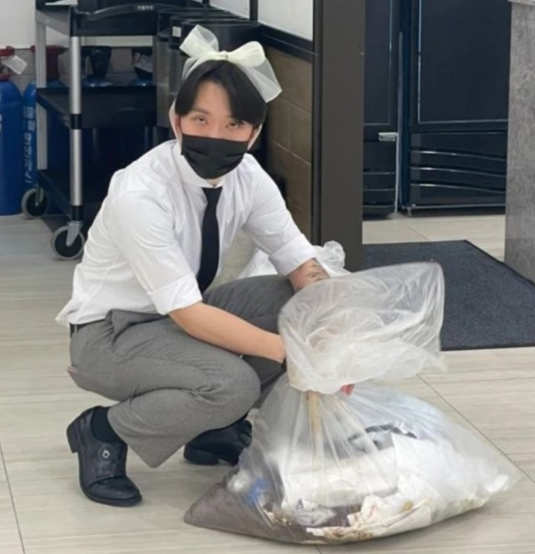
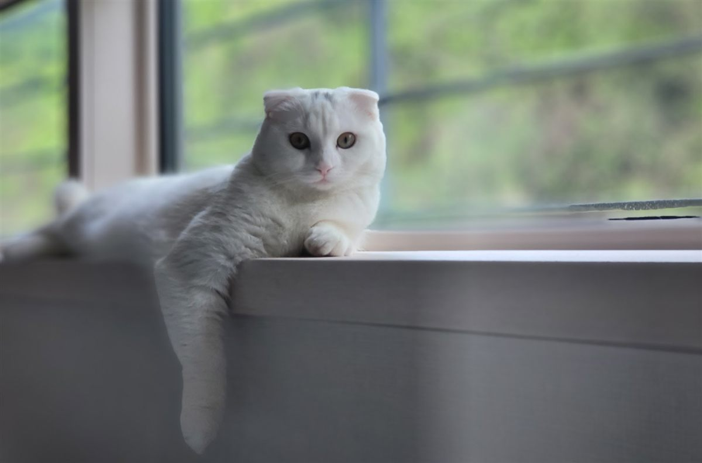
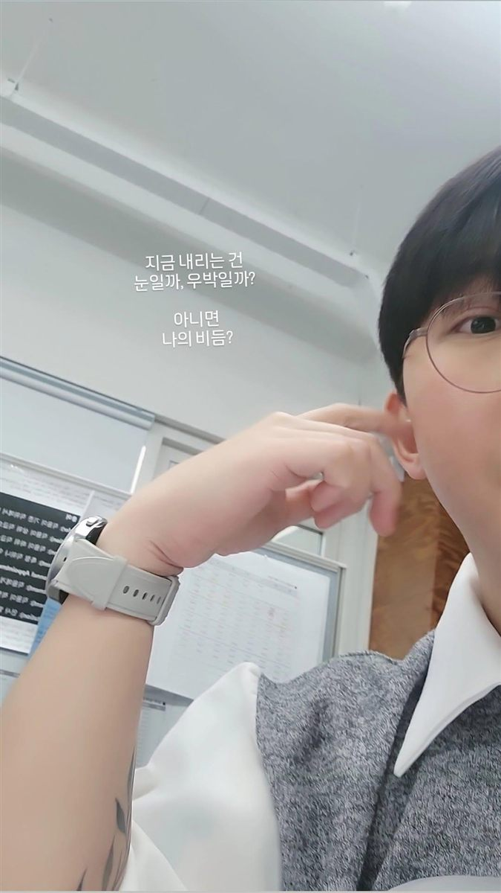
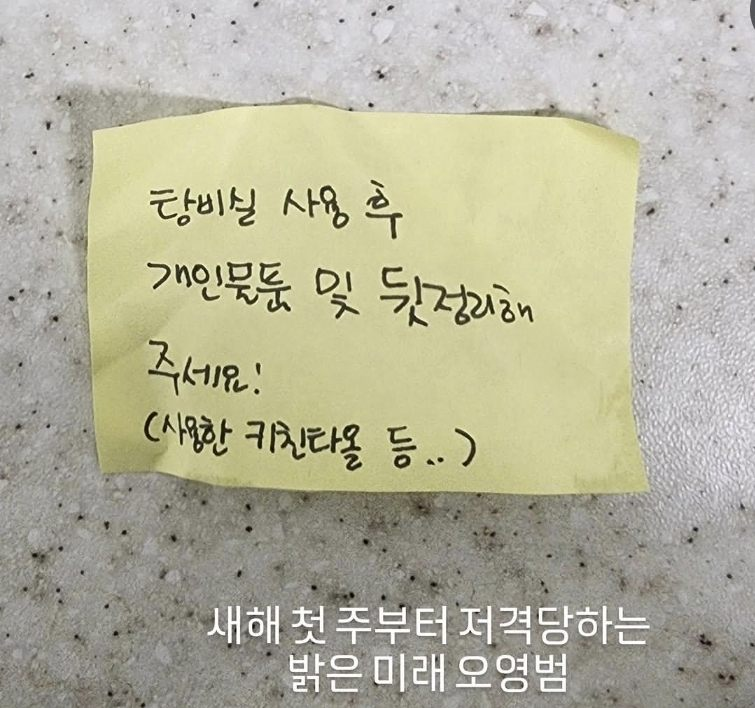
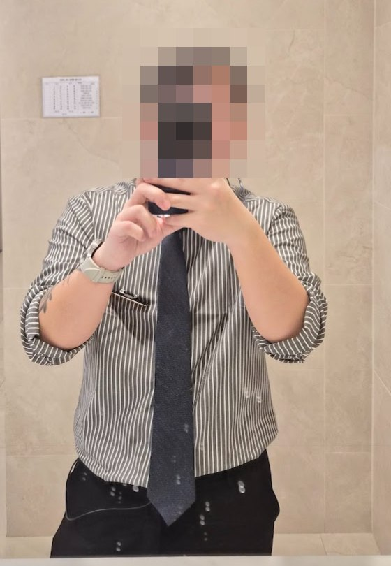
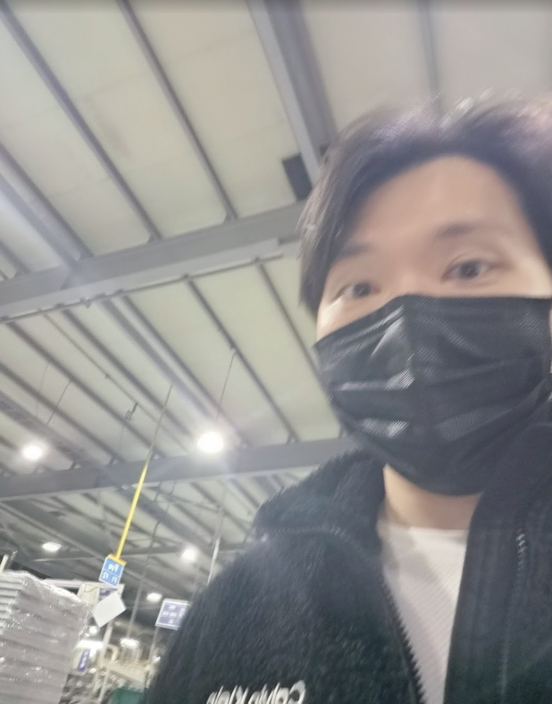
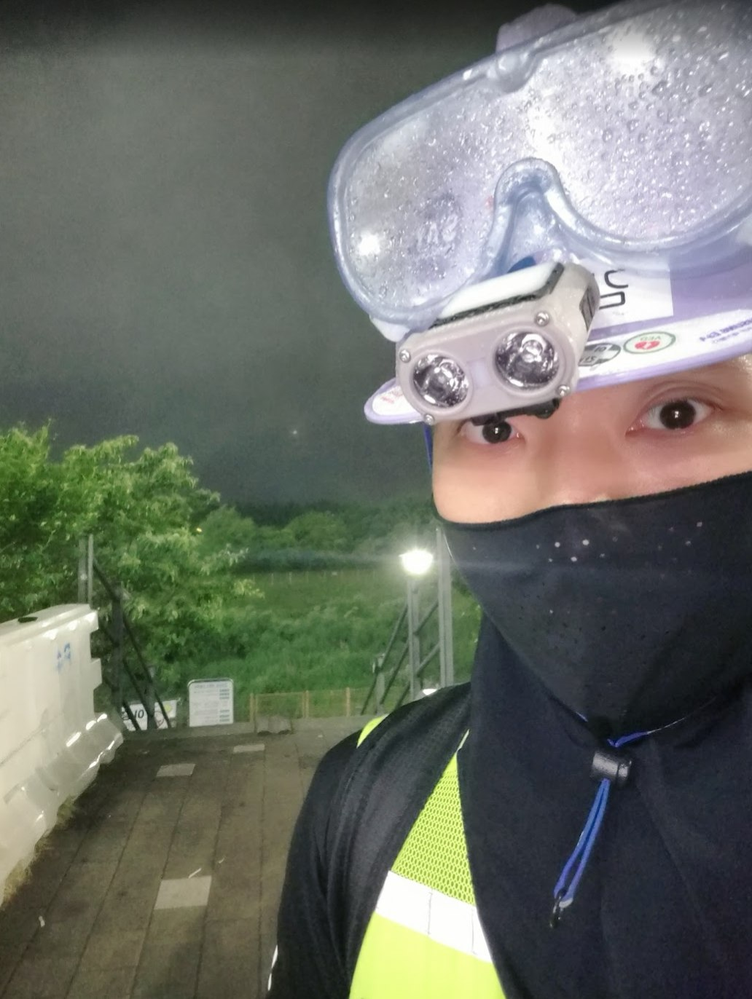
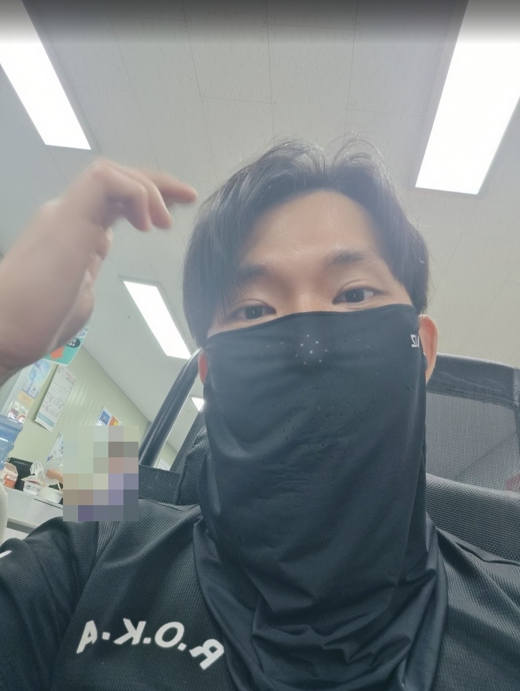

〈 영화관에서 찾은 길 〉걸어온 길 · 시작 · 그때의 명찰대학을 중퇴하고 방황하던 시절, 영화관 아르바이트에서 사람을 상대하는 일이 무척 재미있다는 걸 알았어요. 그때 직업을 서비스업으로 정했어요.

〈 서비스업 현장직 〉걸어온 길 · 약 4년 · 그때의 모습프리미엄 뷔페에서 손님을 응대하는 일이 좋았어요. 서비스업 현장에서 약 4년을 보냈어요.

〈 사람에 지쳐 가던 때 〉걸어온 길 · 전환점 · 그때의 마음사람 상대가 좋아서 시작한 일이었지만, 현장에서 어려운 순간도 많았어요. 그러다 사람에 조금씩 지쳐 가던 때, 대표님이 좋은 기회를 주셨어요.

〈 구매팀 〉걸어온 길 · 서비스업 사무직 · 1년대표님이 주신 기회로 같은 회사 구매팀에 들어갔어요. 언젠가 장사를 하게 된다면 회사가 어떻게 굴러가는지 궁금했던 터라 좋은 기회였어요.

〈 인사팀 〉걸어온 길 · 서비스업 사무직 · 1년 3개월구매팀에서 일하다 팀 인원이 충원되면서 인사팀으로 옮겨 일했어요. 두 부서를 거치며 사람과 조직이 움직이는 방식을 배웠고, 그 뒤 새로운 길을 찾아 회사를 나왔어요.

〈 다시 현장으로 〉걸어온 길 · 되돌아간 길 · 그때의 모습다른 곳에서 제안이 와 다시 서비스 현장으로 돌아갔지만, 적응하지 못하고 그만두었어요.

〈 혼자 일할 수 있는 곳을 찾아 〉걸어온 길 · 지방 공장 · 약 1개월 · 그때의 모습사람에 지쳐 있던 터라, 혼자 일하면서 보수도 괜찮은 일을 찾다 지방 공장에 들어갔어요. 동료 대부분이 외국인이라 말이 통하지 않아 한 달 만에 그만두고, 바로 건설 현장으로 갔어요.

〈 건설 현장 〉걸어온 길 · 약 6개월 · 그때의 모습아무것도 없이 갑자기 일하러 간, 하나의 도전이었어요. 새로운 환경에 적응하며 몸으로 부딪히는 시간을 보냈어요.

〈 쿠팡 물류 〉걸어온 길 · 약 2개월 · 그때의 모습쿠팡 물류에서 약 2개월을 일했어요.
🧭
〈 경험하며 나를 알아가기 〉걸어온 길 · 한 줄 정리서로 다른 일을 거치며 잘하는 것과 원하는 삶의 방향을 조금씩 알아 왔어요. 그 경험이 사람과 일을 바라보는 시야의 바탕이 되었어요.
소분류지금의 도전
🌐
〈 AI가 기본이 된 세상에서 〉도전 · 시작한 계기세상이 빠르게 바뀌면서 AI를 다루는 일이 기본이 되었어요. 그 속에서 어떤 진로를 갈 수 있을지 고민하다가 개발 쪽을 생각하게 됐어요.
☁️
〈 AI·클라우드와 백엔드로 〉도전 · 새로운 진로AI·클라우드와 백엔드 개발로 진로를 넓히려고 기초부터 공부하고 있어요. 다시 초보자가 되는 일이 쉽지는 않지만, 모르는 것을 하나씩 이해하며 나아가요.
☕
〈 지금, Java 공부 〉도전 · 비전공자 · 새로운 분야전혀 새로운 분야라서, 모르던 걸 하나씩 알아 가는 재미로 달리는 중이에요.
✅
〈 지금까지 배운 것 〉7개 완료 · 지금은 배열변수, 연산자, 조건문, 반복문, 스코프, 형변환, Scanner 기본기까지 배웠어요.
🛠️
〈 현장 경험을 기술과 연결해 〉목표 · 개발자이전의 현장 경험과 사람에 대한 이해를 기술과 연결해, 실제로 필요한 것을 만드는 개발자로 성장하고 싶어요.
소분류성격
#꼼꼼함#유쾌함#내성적#깔끔함
〈 나를 설명하는 네 마디 〉성격 · 키워드꼼꼼하고, 유쾌하고, 내성적이고, 깔끔해요.
🌤️
〈 소극적이던 내가, 서비스업으로 〉성격 · 변화예전에는 소극적이고 내성적이었어요. 서비스업에 도전하면서 성격이 많이 밝아졌어요.
#도전정신#꾸준함#일단_부딪쳐보기
〈 일단 부딪쳐보기 〉성격 · 도전지나온 모든 과정이 일단 부딪혀보는 일이었어요.
🖋️
〈 솔직하게, 품격 있게 〉성격 · 말과 글감정과 생각을 솔직하게 표현하는 편이에요. 남에게 보내는 글은 예의 있게 다듬고, 감정을 어떤 말과 태도로 전할지 고민해요.
🌿
〈 조용히 편안해지는 곳 〉성격 · 쉼계속 무언가를 해내는 것만큼, 내가 어떤 분위기에서 편안해지는지 아는 것도 중요해요. 조용한 여행과 혼자 보내는 시간이 그런 순간이에요.
소분류가치관
🏛️
〈 경험, 지혜, 품격 〉가치관 · 가장 중요하게 여기는 것직접 겪으며 배우고, 그 배움을 판단의 기준으로 쌓아 가고 싶어요. 그 기준이 사람을 대하는 말과 태도에도 자연스럽게 드러나는 사람이 되려 해요.
💡
〈 이해가 돼야 내 것이 된다 〉가치관 · 배움의 태도궁금한 것은 충분히 이해할 때까지 물어요. 그럴듯한 설명보다, 스스로 납득할 수 있는 이유를 중요하게 생각해요.
⚖️
〈 현실을 따지되, 호기심은 놓지 않고 〉가치관 · 균형현실적인 조건을 따져 보면서도, 새로운 경험에 대한 호기심을 놓치지 않으려 해요.
소분류작가 노트
경험은 지혜가 되고, 지혜는 품격이 된다.
〈 작가 노트 〉오영범 · 경험 · 지혜 · 품격직접 겪으며 배우고, 그 배움이 말과 태도에 자연스럽게 드러나는 삶을 지향해요.